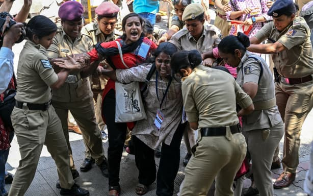

Case study · Civic systems
Batch democracy meets a stream society.
India · present
CJP called for CEC Gyanesh Kumar to resign. Barricades answered first.
Photo: Bhawika Chhabra / Reuters · New Delhi, 9–10 Oct 2026
Working systems
Ceremony is optional. The trail is not.
Lab evidence
Tools help. They do not invent civic energy.
Design ask

Where do you still run on a ceremony?